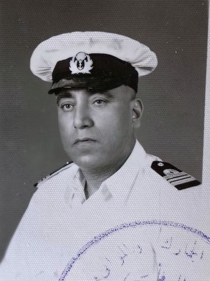

Bader Abdulwahab Al-Qatami
1910 to 1986
Life in brief
Nakhuda Bader bin Abdulwahab Al-Qatami learned the sea on his father's baghla Al-Badri, took his master's licence at Zanzibar, and commanded Al-Badri and later the boom Al-Sulaimani. He marked the channel out of the Rufiji delta so well that the marks were called «Ibn Qatami's buoys», trained his brothers Yousef and Naser, and after the sea piloted ships at Shuwaikh port and built boats. He died on 1 January 1986.
Life facts
- Born
- about 1910, in the Al-Qatami house in Sharq (Al-Hajji, Nawakhdhat Al-Safar Al-Shirai, p. 63), Kuwait
- Died
- 1 January 1986, Al-Sabah Hospital; buried at Sulaibikhat Cemetery (Al-Hajji, p. 74), Kuwait
- Office
- His office was in Souq Al-Tujjar, opposite Seif Palace (photographed there on 24 November 1978), Kuwait City
- Sea
- In the late 1950s he was a ship pilot at Shuwaikh Port, among the senior captains there (Dr Abdulmohsen Abdullah Al-Kharafi, Al-Othman: Madrasat Al-Safar Al-Shira'i fil-Kuwait, page 252)
- Sea
- He told Dr Yacoub Al-Hijji that on a voyage with his father he saw a huge baghla from Qeshm Island of about 7,000 mann (525 tons) (Dr Yacoub Yousef Al-Hijji, Sina'at Al-Sufun Al-Shira'iya fil-Kuwait, page 162)
- Alan Villiers
- Alan Villiers met him at Mombasa: «Bedar bin Abdul Wahhab of the baggala Bedri, a sweet old vessel… Bedar was a young man, very tall, dignified in his long white gown and brown cloak.» At Kwale island he wrote that Bader's baghla was «very picturesque, like a galleon of Spain», more than half a century old and one of the last carved stern galleon baghlas of Kuwait, and he thought of buying her to save her. On the way home there was no news of Al-Badri for weeks, until she turned up at Muscat after a long passage from Zanzibar (Alan Villiers, Sons of Sindbad, 2006 edition, pages 156, 158, 207 to 209, 248, 288 and 322)
- Al-Badri
- At Kwale island in 1939 Al-Badri lay beached for repairs beside Villiers' ship: «one of these baggalas was Bedar bin Abdul-wahhab's stately Bedri», wrote Villiers, adding that Bader «had taken his master's licence so recently at Zanzibar». On 14 April 1939 Al-Badri sailed from Zanzibar alongside them, Villiers' ship carrying a lamp at the flagstaff to show the Badri where she was, but they lost sight of her off Pemba and did not see her again on the passage to Arabia (Alan Villiers, Sons of Sindbad, 2006 edition, pages 204 and 238)
- Al-Badri
- Alan Villiers on Al-Badri, beached at Kwale in 1939: «Bedar's baggala very picturesque, like a galleon of Spain, with her carved and galleried stern towering over the trees and her low, sweet bow pointing out to sea. Every line of her was beautiful… The flowing grace of her lovely bow was as beautiful as anything I had ever seen… a sight to delight the eye of a sailor.» And when she floated off: «She was a good old ship, beautiful to look upon… she rode in the water with the grace of a gull» (Alan Villiers, Sons of Sindbad, 2006 edition, pages 207 and 208)
- Al-Badri
- Al-Hijji writes that Bader learnt the art of sailing and navigation aboard Al-Badri with his father on voyages to India and Africa, and later trained his two brothers, Yousef and Naser, as captains aboard her (Yacoub Yusuf Al-Hijji, The Art of Dhow-building in Kuwait, page 118)
- Al-Badri
- He became nakhuda of Al-Badri when his father, Abdulwahab Abdulaziz, moved to command Al-Daw; the baghla remained his father's (Noor Faisal Al-Qatami, family knowledge)
- Stories
- Dr Yacoub Al-Hijji heard stories of the sea from Bader himself. At eleven Bader fell into the sea at night and his father sent sailors in a small boat to rescue him; to celebrate his safe return his mother baked bread for the poor. He once designed and cut a new sail on deck for his very large ship, and brought her out of the Rufiji delta at low tide by marking both banks of the river. He could sail from Mombasa to India checking the latitude with his sextant only twice, and found that the direct route across the ocean was slower than the coastal one. When his sailors moved the drawing of the ship he had made on the poop to doubt his landfall, he smiled and said, «Ask your mischievous hands that did this.» He told Al-Hijji that if he were eighteen again he would ask for nothing but a sarong round his waist. In Bombay during the Second World War the nakhuda Bilal asked him to sail with him; Bader agreed only if he would be in command, Bilal refused, and Bilal's ship was lost with most of her crew (Yacoub Y. Al-Hijji, Maritime Folklore of Kuwait, 2021, pages 39, 45, 47, 57, 58, 59 and 77)
Family
- Father
- Abdulwahab Abdulaziz Al-Qatami
- Mother
- Mariam Khalifa Al-Ghanim